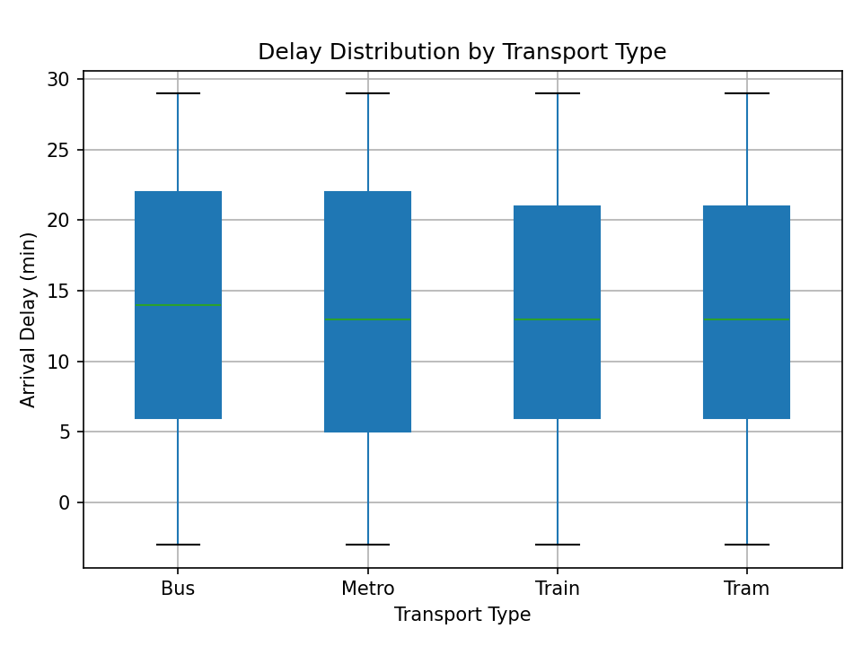
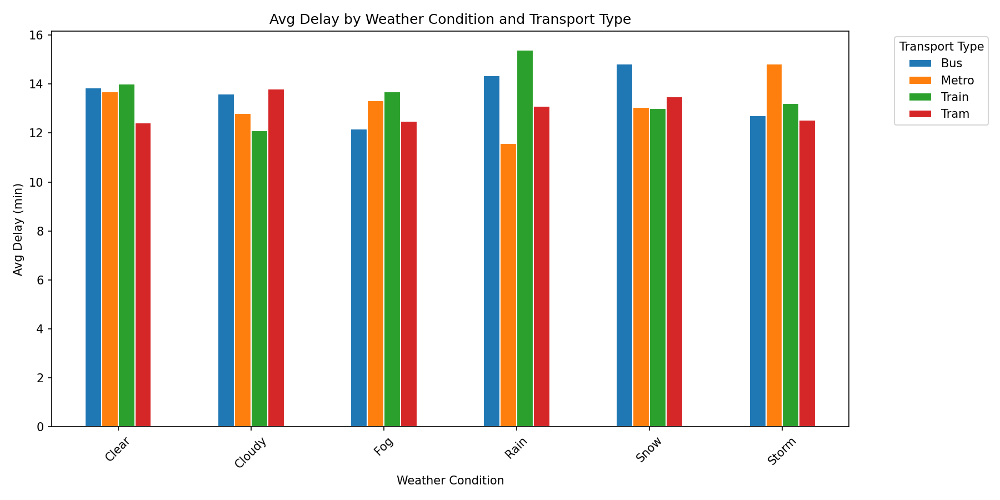
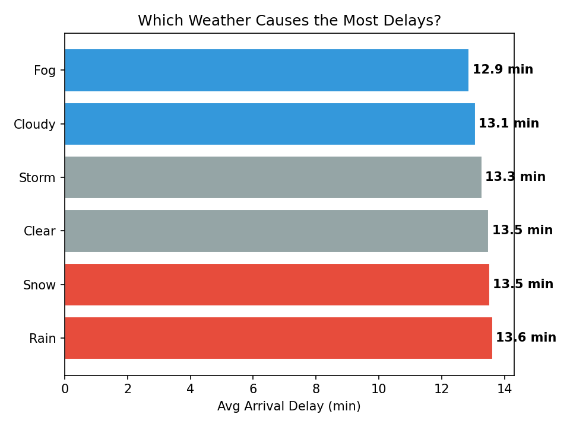
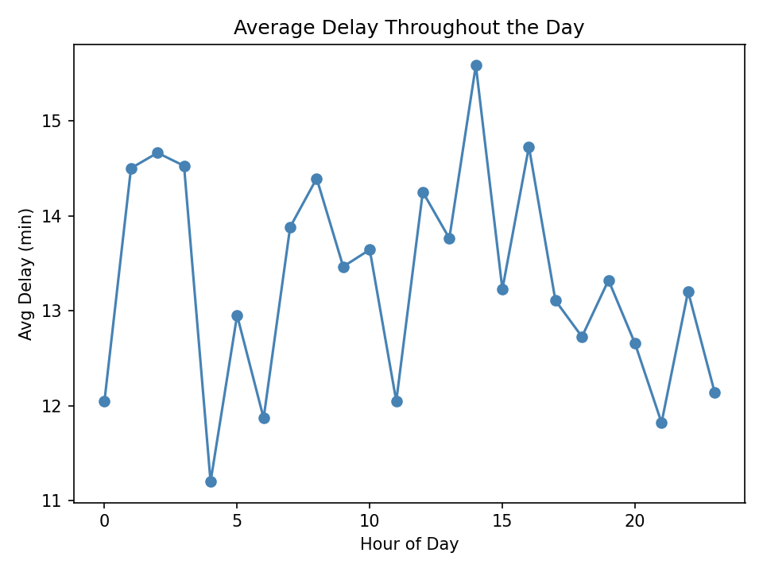
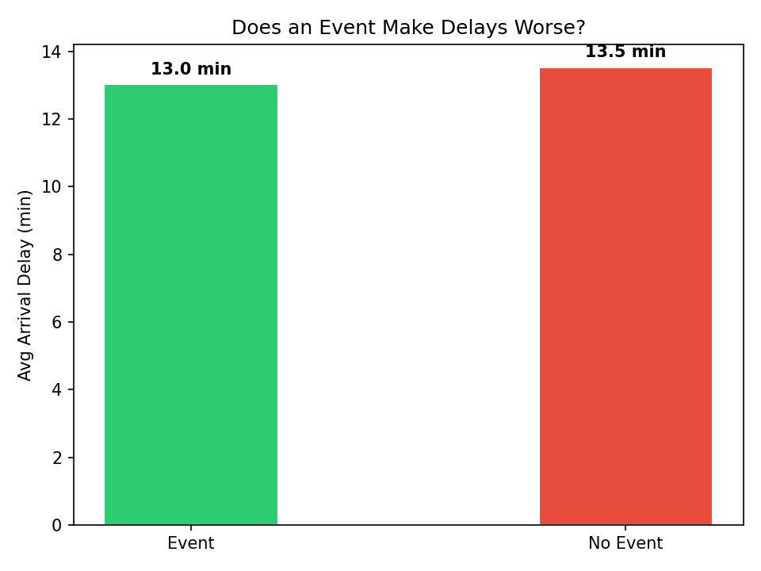
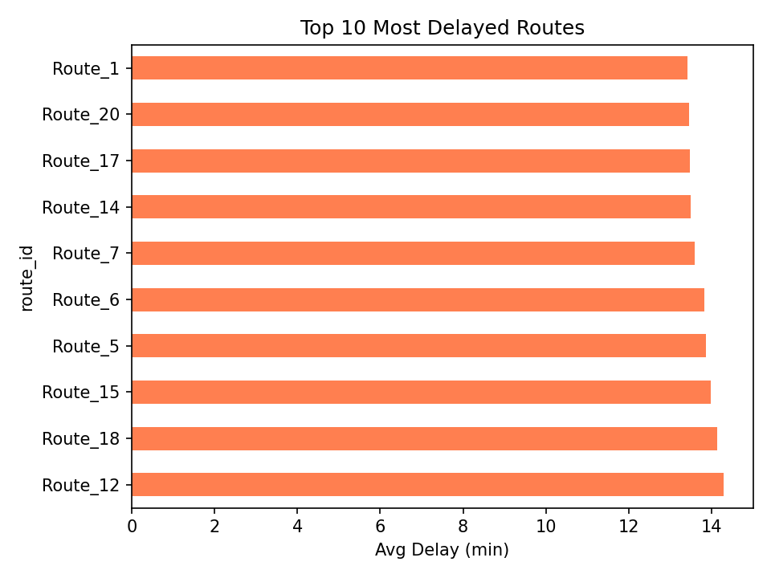

Setup Cleaning
2,000 Trips. One Messy Column.
The dataset arrived with 2,000 recorded trips across buses, trams, trains and metros — spanning seasons, weather events, and a full calendar year. At first glance it looked clean. Shape was right, types made sense, and most columns returned zero nulls.
Then came event_type. 1,173 missing values — more than half the dataset. A less careful eye might flag this as a data quality problem and reach for a drop or a statistical fill. But the context told a different story.
"Missing doesn't always mean broken. Sometimes it means nothing happened — and that's the most important thing to record."
Those 1,173 blank rows weren't errors. They were trips that ran on ordinary days with no concert, no protest, no parade. Filling them with "None" turned ambiguity into signal — and preserved the integrity of every analysis that followed.
Transport
Not All Vehicles Are Equal
The first question any commuter asks: which mode of transport is most likely to let me down? The box plot told the story clearly — delay distributions vary significantly across transport types, and the spread matters as much as the average.
Some modes showed tight, predictable delay windows. Others came with long tails — meaning when they're late, they're very late. That variance is the real cost to the passenger, not just the mean delay figure.

"The average delay tells you what to expect. The tail tells you what to fear."
Weather
Blame the Weather? The Data Has Thoughts.
Weather is the go-to excuse when transport runs late. Storm rolls in, trains slow down — feels obvious. But when you break it down across every weather condition and cross it with transport type, the picture gets more complicated.
The grouped bar chart revealed that the same weather condition hits different transport modes very differently. A storm that cripples buses may barely affect the metro. That's not random — it reflects infrastructure, route exposure, and operational protocols baked into each system.


Time Events
The City Never Sleeps — But It Does Slow Down
Time of day turned out to be one of the most revealing dimensions in the dataset. The line chart showed delay patterns that mirror the rhythm of city life — quiet in the early hours, building through the morning, shifting again in the evening.

Then came the event question — the one that required cleaning first. With 1,173 "None" fills in place, the comparison was finally fair. The result was surprising.

"Events move half a minute of delay. Rush hour moves far more. The city is its own worst disruption."
The gap between event and non-event days was roughly 0.5 minutes — statistically present, practically negligible. The assumption that a concert or a parade brings the transport network to its knees? The data doesn't support it.
Routes
Ten Routes. Disproportionate Pain.
Aggregating by route cut through all the noise. Weather varies, events come and go, time of day shifts — but certain routes are consistently late regardless of conditions. These aren't unlucky corridors. They're structural problems.

This chart is the most actionable output of the entire analysis. Every other finding describes patterns. This one names addresses. If a transport authority wanted to know where to intervene first, this is the answer.